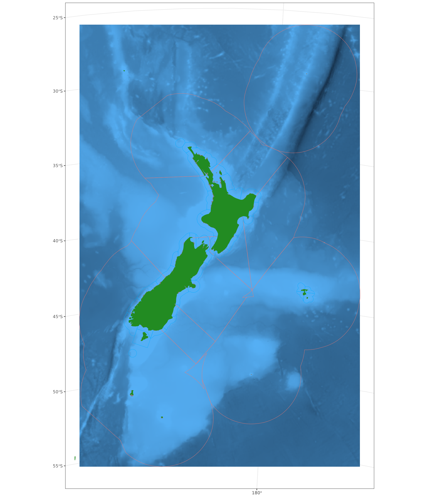
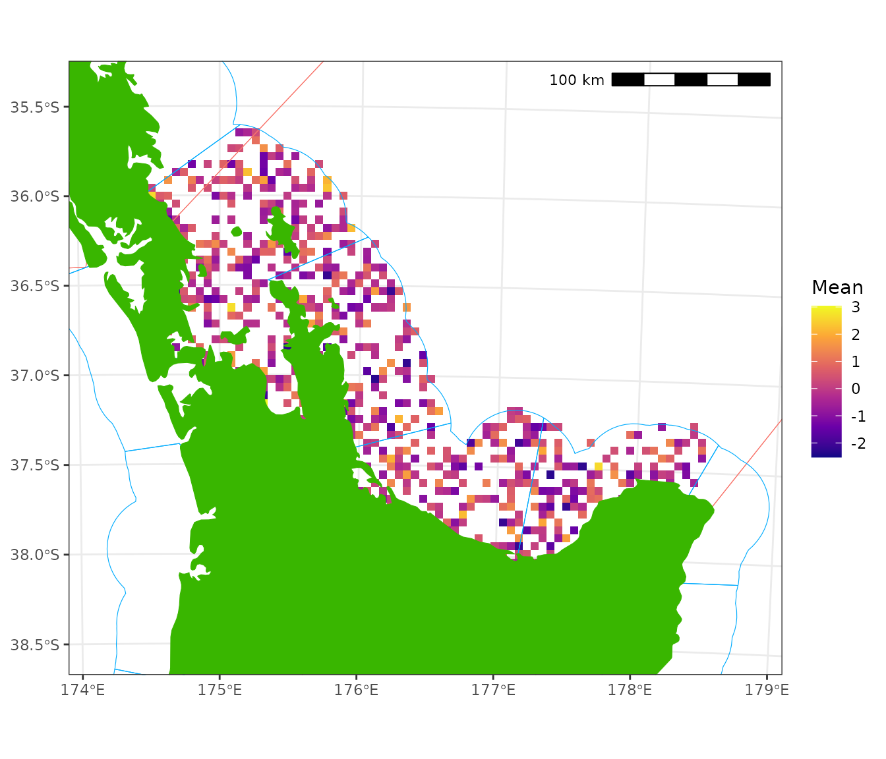
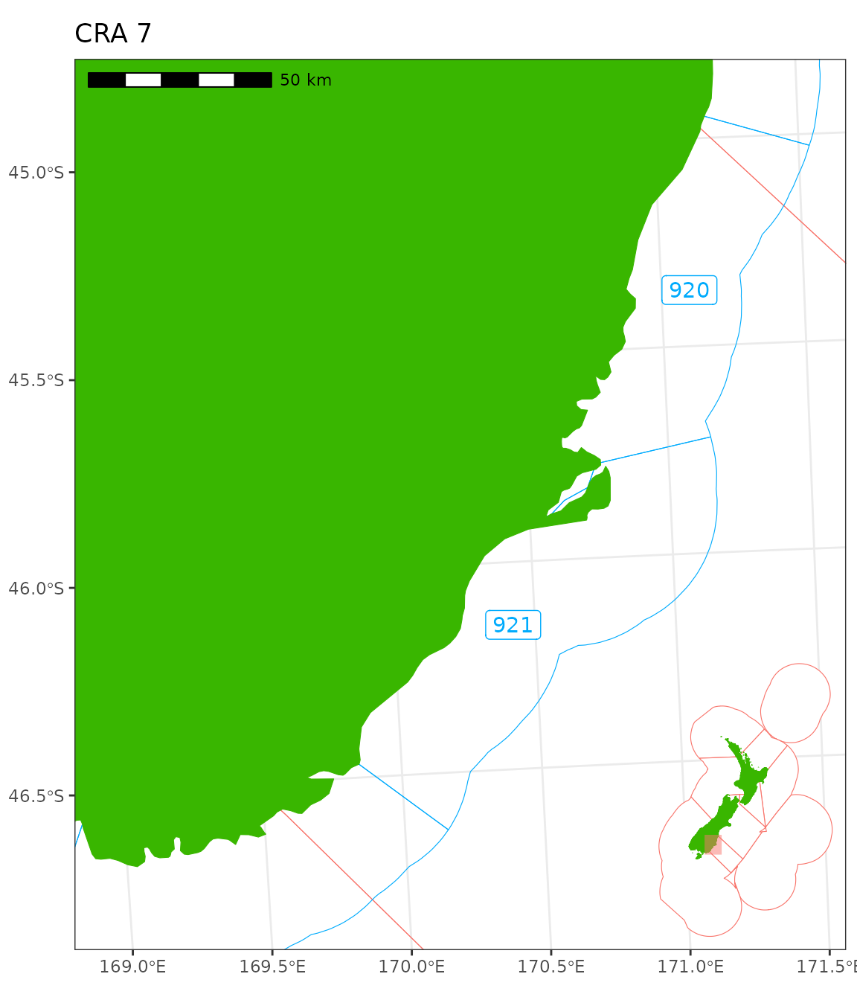
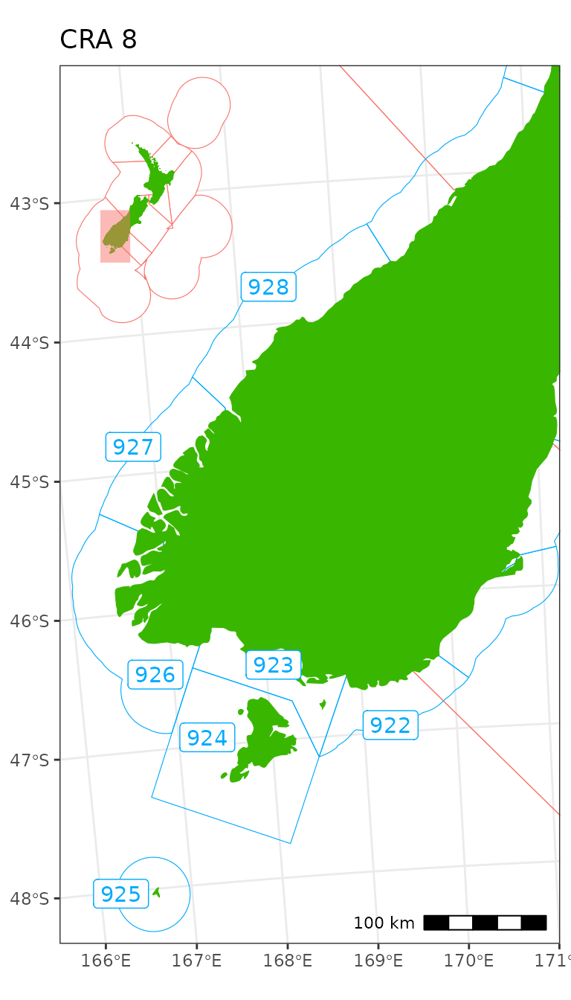

This vignette showcases nzsf applied to New Zealand rock
lobster.
library(nzsf)
library(ggspatial)
library(lwgeom)
library(ggnewscale)
library(stars)
library(cowplot)
library(patchwork)
theme_set(theme_bw() + theme(axis.title = element_blank()))
col_land <- "#39B600"
col_coast <- "#39B600"
col_stat <- "#00ABFD"
col_qma <- col_box <- "#F8766D"
sf_qma <- get_qma("CRA")
sf_coast <- get_coast(resolution = "medium") %>%
st_combine() %>%
st_buffer(dist = 4500) %>%
st_make_valid()
lab <- st_difference(sf_qma, sf_coast) %>% st_centroid()
#> Warning: attribute variables are assumed to be spatially constant throughout
#> all geometries
#> Warning: st_centroid assumes attributes are constant over geometries
lab$geometry[1] <- st_point(c(-270000, 772461))
lab$geometry[6] <- st_point(c(150000, -220000))
sf_stat <- get_statistical_areas("CRA") %>% filter(QMA %in% "CRA1")
bbox <- sf_stat %>% st_buffer(dist = 1e5) %>% st_bbox()
box <- st_as_sfc(bbox)
ggplot() +
# geom_gebco(proj = proj_nzsf(), downsample = 0) +
plot_qma(qma = "CRA", fill = NA, colour = col_qma) +
plot_coast(resolution = "medium", fill = col_land, colour = col_coast) +
geom_sf(data = box, colour = NA, fill = col_box, alpha = 0.5) +
geom_sf_text(data = lab, aes(label = QMA), size = 2.5, colour = col_qma) +
annotation_north_arrow(location = "tl", which_north = "true",
style = north_arrow_nautical) +
plot_clip(x = sf_qma)
sf_stat <- get_statistical_areas("CRA")
sf_diff <- st_difference(sf_stat, sf_coast)
#> Warning: attribute variables are assumed to be spatially constant throughout
#> all geometries
lab1 <- sf_diff %>% st_centroid()
#> Warning: st_centroid assumes attributes are constant over geometries
lab2 <- sf_diff %>% st_point_on_surface()
#> Warning: st_point_on_surface assumes attributes are constant over geometries
bb <- sf_qma %>% st_bbox()
# bb[1] <- -750000 # xmin
# bb[2] <- -990000 # ymin
# bb[3] <- 800000 # xmax
# bb[4] <- 1000000 # ymax
p <- ggplot() +
plot_statistical_areas(area = "CRA", fill = NA, colour = col_stat) +
plot_qma(qma = "CRA", fill = NA, colour = col_qma) +
plot_coast(resolution = "medium", fill = col_land, colour = col_coast) +
geom_sf_text(data = lab, aes(label = QMA), colour = col_qma) +
annotation_north_arrow(location = "tl", which_north = "true",
style = north_arrow_nautical) +
plot_clip(x = bb, expand = TRUE)
ggsave(filename = "CRA_QMA_stat.png", plot = p, width = 6, height = 8.5)
p
bathy <- cbind(coordinates(gebco_NZ), as.data.frame(gebco_NZ)) %>%
mutate(z = ifelse(z > 10, NA, z)) %>%
filter(x > -1.4e6, x < 1.4e6, y > -2e6, y < 2e6)
ggplot() +
# geom_gebco(proj = proj_nzsf(), downsample = 0) +
geom_tile(data = bathy, aes(x = x, y = y, fill = z)) +
plot_qma(qma = "CRA", fill = NA, colour = col_qma) +
plot_statistical_areas(area = "CRA", fill = NA, colour = col_stat) +
plot_coast(fill = "forestgreen", colour = "forestgreen") +
plot_clip(get_statistical_areas(area = "EEZ")) +
theme(legend.position = "none")
sf_diff <- st_difference(sf_stat, sf_coast)
#> Warning: attribute variables are assumed to be spatially constant throughout
#> all geometries
lab1 <- sf_diff %>% st_centroid()
#> Warning: st_centroid assumes attributes are constant over geometries
lab2 <- sf_diff %>% st_point_on_surface()
#> Warning: st_point_on_surface assumes attributes are constant over geometries
ggplot() +
geom_sf(data = sf_diff) +
geom_sf(data = lab1, colour = "red") +
geom_sf(data = lab2, colour = "blue")CRA 1
p1 <- ggplot() +
plot_qma(qma = "CRA", fill = NA, colour = col_qma) +
plot_statistical_areas(area = "CRA", fill = NA, colour = col_stat) +
plot_coast(resolution = "large", fill = col_land, colour = col_coast) +
geom_cra(feature = "label", qma = "CRA1", colour = col_stat) +
plot_clip(x = bbox) +
labs(title = "CRA 1") +
annotation_scale(location = "bl", unit_category = "metric")
#> Warning: attribute variables are assumed to be spatially constant throughout
#> all geometries
#> Warning: st_centroid assumes attributes are constant over geometries
pi1 <- ggplot() +
plot_qma(qma = "CRA", fill = "white", colour = col_qma) +
plot_coast(resolution = "1500k", fill = col_land, colour = col_coast) +
geom_sf(data = box, colour = NA, fill = col_box, alpha = 0.5) +
plot_clip(x = "NZ") +
theme_void()
p <- ggdraw() +
draw_plot(p1) +
draw_plot(pi1, x = 0.73, y = 0.63, width = 0.3, height = 0.3)
ggsave(filename = "CRA1.png", plot = p, width = 6, height = 6)
pCRA 2
stat2 <- get_statistical_areas("CRA") %>% filter(QMA %in% "CRA2")
box2 <- stat2 %>%
st_buffer(dist = 4e4) %>%
st_bbox() %>%
st_as_sfc()
p2 <- ggplot() +
plot_qma(qma = "CRA", fill = NA, colour = col_qma) +
plot_statistical_areas(area = "CRA", fill = NA, colour = col_stat) +
plot_coast(resolution = "large", fill = col_land, colour = col_coast) +
geom_cra(feature = "label", qma = "CRA2", colour = col_stat) +
plot_clip(x = box2, expand = FALSE) +
annotation_scale(location = "br", unit_category = "metric") +
labs(title = "CRA 2")
#> Warning: attribute variables are assumed to be spatially constant throughout
#> all geometries
#> Warning: st_centroid assumes attributes are constant over geometries
pi2 <- ggplot() +
plot_qma(qma = "CRA", fill = "white", colour = col_qma) +
plot_coast(resolution = "1500k", fill = col_land, colour = col_coast,
size = 0.05) +
geom_sf(data = box2, colour = NA, fill = col_box, alpha = 0.5) +
plot_clip(x = "NZ") +
theme_void()
p <- ggdraw() +
draw_plot(p2) +
draw_plot(pi2, x = 0.73, y = 0.63, width = 0.3, height = 0.3)
ggsave(filename = "CRA2.png", plot = p, width = 7, height = 6)
p
pts <- st_sample(stat2, size = 1000) %>%
st_sf() %>%
mutate(z = rnorm(1:n()))
r0 <- get_standard_grid(cell_size = 5, bounding_box = st_bbox(stat2),
return_raster = TRUE)
#> Warning in get_standard_grid_origin(cell_size = cell_size, bounding_box =
#> bounding_box, : The chosen grid size does not conform to the standard grid
#> specification, consider setting cell_size to one of: 0.25, 0.5, 1, 2, 4, 8, 16,
#> 32, 64, 128, 256, 512, 1024.
r <- rasterize(x = pts, y = r0, field = "z", fun = mean)
# r[] <- ifelse(r[] < 0, NA, r[])
rstar <- st_as_stars(r)
ggplot() +
# geom_sf(data = pts, aes(colour = z)) +
geom_stars(data = rstar) +
scale_fill_viridis_c(option = "C", na.value = NA) +
plot_qma(qma = "CRA", fill = NA, colour = col_qma) +
plot_statistical_areas(area = "CRA", fill = NA, colour = col_stat) +
plot_coast(resolution = "large", fill = col_land, colour = col_coast) +
plot_clip(x = box2, expand = FALSE) +
annotation_scale(location = "tr", unit_category = "metric") +
labs(fill = "Mean")
#> Warning: Removed 3792 rows containing missing values or values outside the scale range
#> (`geom_raster()`).
CRA 3
stat3 <- get_statistical_areas("CRA") %>% filter(QMA %in% "CRA3")
box3 <- stat3 %>%
st_buffer(dist = 4e4) %>%
st_bbox() %>%
st_as_sfc()
p2 <- ggplot() +
plot_qma(qma = "CRA", fill = NA, colour = col_qma) +
plot_statistical_areas(area = "CRA", fill = NA, colour = col_stat) +
plot_coast(resolution = "large", fill = col_land, colour = col_coast) +
geom_cra(feature = "label", qma = "CRA3", colour = col_stat) +
plot_clip(x = box3, expand = FALSE) +
annotation_scale(location = "tl", unit_category = "metric") +
labs(title = "CRA 3")
#> Warning: attribute variables are assumed to be spatially constant throughout
#> all geometries
#> Warning: st_centroid assumes attributes are constant over geometries
pi2 <- ggplot() +
plot_qma(qma = "CRA", fill = "white", colour = col_qma) +
plot_coast(resolution = "1500k", fill = col_land, colour = col_coast,
size = 0.05) +
geom_sf(data = box3, colour = NA, fill = col_box, alpha = 0.5) +
plot_clip(x = "NZ") +
theme_void()
p <- ggdraw() +
draw_plot(p2) +
draw_plot(pi2, x = 0.68, y = 0.04, width = 0.3, height = 0.3)
ggsave(filename = "CRA3.png", plot = p, width = 5, height = 7)
pCRA 4
stat4 <- get_statistical_areas("CRA") %>% filter(QMA %in% "CRA4")
box4 <- stat4 %>%
st_buffer(dist = 4e4) %>%
st_bbox() %>%
st_as_sfc()
p2 <- ggplot() +
plot_qma(qma = "CRA", fill = NA, colour = col_qma) +
plot_statistical_areas(area = "CRA", fill = NA, colour = col_stat) +
plot_coast(resolution = "large", fill = col_land, colour = col_coast) +
geom_cra(feature = "label", qma = "CRA4", colour = col_stat) +
plot_clip(x = box4, expand = FALSE) +
annotation_scale(location = "tr", unit_category = "metric") +
labs(title = "CRA 4")
#> Warning: attribute variables are assumed to be spatially constant throughout
#> all geometries
#> Warning: st_centroid assumes attributes are constant over geometries
pi2 <- ggplot() +
plot_qma(qma = "CRA", fill = "white", colour = col_qma) +
plot_coast(resolution = "1500k", fill = col_land, colour = col_coast,
size = 0.05) +
geom_sf(data = box4, colour = NA, fill = col_box, alpha = 0.5) +
plot_clip(x = "NZ") +
theme_void()
p <- ggdraw() +
draw_plot(p2) +
draw_plot(pi2, x = 0.72, y = 0.035, width = 0.3, height = 0.3)
ggsave(filename = "CRA4.png", plot = p, width = 6, height = 7)
pCRA 5
stat5 <- get_statistical_areas("CRA") %>% filter(QMA %in% "CRA5")
box5 <- stat5 %>%
st_buffer(dist = 4e4) %>%
st_bbox() %>%
st_as_sfc()
p2 <- ggplot() +
plot_qma(qma = "CRA", fill = NA, colour = col_qma) +
plot_statistical_areas(area = "CRA", fill = NA, colour = col_stat) +
plot_coast(resolution = "large", fill = col_land, colour = col_coast) +
geom_cra(feature = "label", qma = "CRA5", colour = col_stat) +
plot_clip(x = box5, expand = FALSE) +
annotation_scale(location = "tl", unit_category = "metric") +
labs(title = "CRA 5")
#> Warning: attribute variables are assumed to be spatially constant throughout
#> all geometries
#> Warning: st_centroid assumes attributes are constant over geometries
pi2 <- ggplot() +
plot_qma(qma = "CRA", fill = "white", colour = col_qma) +
plot_coast(resolution = "1500k", fill = col_land, colour = col_coast,
size = 0.05) +
geom_sf(data = box5, colour = NA, fill = col_box, alpha = 0.5) +
plot_clip(x = "NZ") +
theme_void()
p <- ggdraw() +
draw_plot(p2) +
draw_plot(pi2, x = 0.68, y = 0.035, width = 0.3, height = 0.3)
ggsave(filename = "CRA5.png", plot = p, width = 4.6, height = 7)
pCRA 6
stat6 <- get_statistical_areas("CRA") %>% filter(QMA %in% "CRA6")
box6 <- stat6 %>%
st_buffer(dist = 4e4) %>%
st_bbox() %>%
st_as_sfc()
p2 <- ggplot() +
plot_qma(qma = "CRA", fill = NA, colour = col_qma) +
plot_statistical_areas(area = "CRA", fill = NA, colour = col_stat) +
plot_coast(resolution = "1250k", fill = col_land, colour = col_coast) +
geom_cra(feature = "label", qma = "CRA6", colour = col_stat) +
plot_clip(x = box6, expand = FALSE) +
annotation_scale(location = "tl", unit_category = "metric") +
labs(title = "CRA 6")
#> Warning: attribute variables are assumed to be spatially constant throughout
#> all geometries
#> Warning: st_centroid assumes attributes are constant over geometries
pi2 <- ggplot() +
plot_qma(qma = "CRA", fill = "white", colour = col_qma) +
plot_coast(resolution = "1500k", fill = col_land, colour = col_coast,
size = 0.05) +
geom_sf(data = box6, colour = NA, fill = col_box, alpha = 0.5) +
plot_clip(x = "NZ") +
theme_void()
p <- ggdraw() +
draw_plot(p2) +
draw_plot(pi2, x = 0.72, y = 0.63, width = 0.3, height = 0.3)
ggsave(filename = "CRA6.png", plot = p, width = 4.65, height = 5)
p
CRA 7
stat7 <- get_statistical_areas("CRA") %>% filter(QMA %in% "CRA7")
box7 <- stat7 %>% st_buffer(dist = 1e4) %>% st_bbox()
box7[2] <- -790000
box7 <- box7 %>% st_as_sfc()
p7 <- ggplot() +
plot_qma(qma = "CRA", fill = NA, colour = col_qma) +
plot_statistical_areas(area = "CRA", fill = NA, colour = col_stat) +
plot_coast(resolution = "large", fill = col_land, colour = col_coast) +
geom_cra(feature = "label", qma = "CRA7", colour = col_stat) +
plot_clip(x = box7, expand = FALSE) +
annotation_scale(location = "tl", unit_category = "metric") +
labs(title = "CRA 7")
#> Warning: attribute variables are assumed to be spatially constant throughout
#> all geometries
#> Warning: st_centroid assumes attributes are constant over geometries
pi7 <- ggplot() +
plot_qma(qma = "CRA", colour = col_qma, fill = "white", size = 0.3) +
plot_coast(resolution = "1500k", fill = col_land, colour = col_coast,
size = 0.05) +
geom_sf(data = box7, colour = NA, fill = col_box, alpha = 0.5) +
plot_clip(x = "NZ") +
theme_void()
p <- ggdraw() +
draw_plot(p7) +
draw_plot(pi7, x = 0.72, y = 0.05, width = 0.3, height = 0.3)
ggsave(filename = "CRA7.png", plot = p, width = 6, height = 7)
p
CRA 8
stat8 <- get_statistical_areas(area = "CRA") %>%
filter(QMA %in% "CRA8" | area %in% 929)
box8 <- stat8 %>%
st_buffer(dist = 1e4) %>%
st_bbox() %>%
st_as_sfc()
p8 <- ggplot() +
plot_qma(qma = "CRA", fill = NA, colour = col_qma) +
plot_statistical_areas(area = "CRA", fill = NA, colour = col_stat) +
plot_coast(resolution = "large", fill = col_land, colour = col_coast) +
geom_cra(feature = "label", qma = "CRA8", colour = col_stat) +
plot_clip(x = box8, expand = FALSE) +
annotation_scale(location = "br", unit_category = "metric") +
labs(title = "CRA 8")
#> Warning: attribute variables are assumed to be spatially constant throughout
#> all geometries
#> Warning: st_centroid assumes attributes are constant over geometries
pi8 <- ggplot() +
plot_qma(qma = "CRA", fill = "white", colour = col_qma, size = 0.3) +
plot_coast(resolution = "1500k", fill = col_land, colour = col_coast,
size = 0.05) +
geom_sf(data = box8, colour = NA, fill = col_box, alpha = 0.5) +
plot_clip(x = "NZ") +
theme_void()
p <- ggdraw() +
draw_plot(p8) +
draw_plot(pi8, x = 0.12, y = 0.65, width = 0.3, height = 0.3)
ggsave(filename = "CRA8.png", plot = p, width = 4, height = 7)
p
gebco8 <- crop(gebco_NZ, get_qma(qma = "CRA") %>%
filter(QMA == "CRA8") %>% st_bbox())
bathy8 <- cbind(coordinates(gebco8), as.data.frame(gebco8)) %>%
mutate(z = ifelse(z < -4500 | z > 500, NA, z))
p <- ggplot() +
geom_tile(data = bathy8, aes(x = x, y = y, fill = z)) +
scale_fill_viridis_c(option = "E") +
plot_qma(qma = "CRA", fill = NA, colour = col_qma) +
plot_statistical_areas(area = "CRA", fill = NA, colour = col_stat) +
plot_coast(resolution = "large", fill = col_land, colour = col_coast) +
plot_clip(x = box8, expand = FALSE) +
annotation_scale(location = "br", unit_category = "metric") +
labs(title = "CRA 8", fill = "Depth (m)")
p
p <- ggplot() +
plot_statistical_areas(area = "CRA", fill = NA, colour = col_stat)
s1 <- p +
plot_coast(resolution = "small", fill = col_land, colour = col_coast) +
labs(title = "resolution = small") +
plot_clip(x = box8, expand = FALSE)
s2 <- p +
plot_coast(resolution = "medium", fill = col_land, colour = col_coast) +
labs(title = "resolution = medium") +
plot_clip(x = box8, expand = FALSE)
s3 <- p +
plot_coast(resolution = "large", fill = col_land, colour = col_coast) +
labs(title = "resolution = large") +
plot_clip(x = box8, expand = FALSE)
s4 <- p +
plot_coast(resolution = "1500k", fill = col_land, colour = col_coast) +
labs(title = "resolution = 1500k") +
plot_clip(x = box8, expand = FALSE)
s5 <- p +
plot_coast(resolution = "1250k", fill = col_land, colour = col_coast) +
labs(title = "resolution = 1250k") +
plot_clip(x = box8, expand = FALSE)
s6 <- p +
plot_coast(resolution = "150k", fill = col_land, colour = col_coast) +
labs(title = "resolution = 150k") +
plot_clip(x = box8, expand = FALSE)
s1 + s2 + s3 + s4 + s5 + s6Combinations
stat78 <- get_statistical_areas(area = "CRA") %>%
filter(QMA %in% c("CRA7", "CRA8") | area %in% 929)
box78 <- stat78 %>%
st_buffer(dist = 1e4) %>%
st_bbox() %>%
st_as_sfc()
p78 <- ggplot() +
plot_qma(qma = "CRA", fill = NA, colour = col_qma) +
plot_statistical_areas(area = "CRA", fill = NA, colour = col_stat) +
plot_coast(resolution = "large", fill = col_land, colour = col_coast) +
geom_cra(feature = "label", qma = c("CRA7", "CRA8"), colour = col_stat) +
plot_clip(x = box78, expand = FALSE) +
annotation_scale(location = "br", unit_category = "metric") +
labs(title = "CRA 7 & 8")
#> Warning: attribute variables are assumed to be spatially constant throughout
#> all geometries
#> Warning: st_centroid assumes attributes are constant over geometries
pi78 <- ggplot() +
plot_qma(qma = "CRA", fill = "white", colour = col_qma, size = 0.3) +
plot_coast(resolution = "1500k", fill = col_land, colour = col_coast,
size = 0.05) +
geom_sf(data = box78, colour = NA, fill = col_box, alpha = 0.5) +
plot_clip(x = "NZ") +
theme_void()
p <- ggdraw() +
draw_plot(p78) +
draw_plot(pi8, x = 0.13, y = 0.68, width = 0.27, height = 0.27)
ggsave(filename = "CRA7_CRA8.png", plot = p, width = 5, height = 7)
p